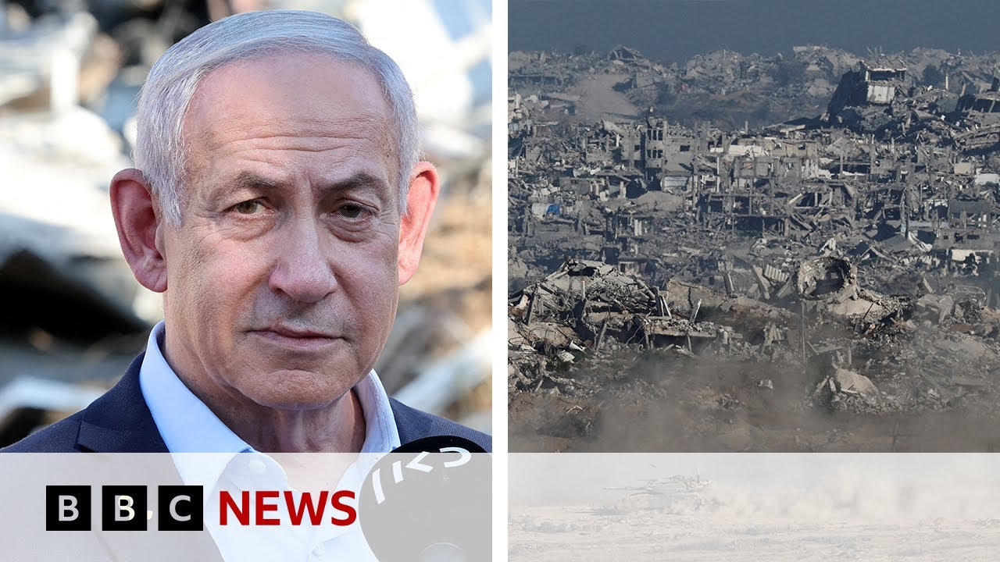

【BBC News 20250707 以色列和哈马斯将举行间接会谈】
Summary: Indirect talks between Israel and Hamas intensify to negotiate a possible ceasefire and hostage release deal in Gaza, though significant gaps remain.
摘要： 以色列和哈马斯之间的间接会谈加紧进行，以协商加沙地带可能的停火和人质释放协议，但仍存在重大分歧。

⏱️ Estimated Reading Time: 8 min
📚 四级生词 📚 六级生词 📚 雅思生词 📚 托福生词 📚 专八生词 📚 SAT生词 📚 考研生词 📚 GRE生词 📚 高考生词 📚 其它生词生词
Indirect talks are to take place between Israel and Hamas today as negotiations intensify to try and reach a possible ceasefire and hostage release deal in Gaza.
以色列和哈马斯将于今天举行间接会谈，双方加紧谈判，试图达成加沙地带可能的停火和人质释放协议。
Even though discussions in Qatar are set to go ahead, Israel's Prime Minister Benjamin Netanyahu has cast doubt over whether a deal can be achieved after he described the proposed changes from Hamas to President Trump's 60-day truce as unacceptable.
尽管卡塔尔的讨论将继续进行，但以色列总理本杰明·内塔尼亚胡对能否达成协议表示怀疑，他认为哈马斯对特朗普总统60天停火协议的修改提议是不可接受的。
Mr. Netanyahu is due to meet Donald Trump at the White House on Monday.
内塔尼亚胡先生定于周一在白宫与唐纳德·特朗普会面。
Well, Ioni Wells is in Jerusalem for us and told us what hope there is of a breakthrough for a ceasefire on the ceasefire negotiations.
目前，Ioni Wells在耶路撒冷为我们报道，并告诉我们停火谈判取得突破的可能性。
Well, at the moment it still seems like there are significant gaps for mediators to bridge.
目前看来，调解人仍需弥合重大分歧。
The biggest chasm really that's still existing is that Hamas want a US guarantee that after any 60-day ceasefire, the fighting in Gaza will end.
最大的分歧在于，哈马斯要求美国保证，在任何60天停火后，加沙的战斗将结束。
This is something which Israel has so far rejected in previous negotiations, but Hamas wants essentially a commitment that the war will end after the period of a ceasefire if a more permanent deal isn't agreed by the end of that 60 days.
以色列在之前的谈判中拒绝了这一要求，但哈马斯实质上希望得到承诺，即如果60天后未达成更持久的协议，战争将在停火期后结束。
Hamas also is requesting a change to the aid provision in Gaza.
哈马斯还要求改变加沙的援助供应方式。
It wants an end to the US and Israeli backed Gaza Humanitarian Foundation and a resumption of aid provided through the UN and other providers.
它希望终止美国和以色列支持的加沙人道主义基金会，并恢复通过联合国和其他机构提供的援助。
Again, this is likely to prove pretty controversial with the Israelis because the Israelis have repeatedly accused Hamas of stealing aid provided by international relief organizations.
这一点可能会引起以色列的强烈争议，因为以色列多次指责哈马斯窃取国际救援组织提供的援助。
And certainly, I think from their perspective, if they were to uh concede on this front, it would seem like a concession being given, which could be politically difficult for Benjamin Netanyahu as well.
当然，从他们的角度来看，如果在这方面让步，可能会被视为一种妥协，这对本杰明·内塔尼亚胡来说在政治上也很困难。
And finally, Hamasa also seeking Israel uh to withdraw its troops to positions they held before the last ceasefire collapse in March.
最后，哈马斯还要求以色列将部队撤回到3月上次停火破裂前的位置。
Uh again, something which perhaps politically might be difficult for the Israeli side to concede to given some of the pressures particularly on Benjamin Netanyahu from the far-right members of his cabinet who do not want him to end the war in Gaza, but also uh if anything want an escalation and an intensifying of uh the the military efforts of Israel in Gaza at the moment.
这一点在政治上对以色列来说可能也难以让步，尤其是内塔尼亚胡面临内阁中极右成员的压力，他们不希望结束加沙战争，甚至希望目前以色列在加沙的军事行动升级和加强。
Uh so these talks are set to continue, but it does look like the same sticking points remain.
因此，这些会谈将继续进行，但似乎同样的症结仍然存在。
and Benjamin Netanyahu's office has been clear that from Israel's perspective the demands Hamas are making are unacceptable though both sides are saying that they are willing to negotiate still some really difficult issues to overcome then but Donald Trump has been very much talking up the possibility of there being a deal I mean is he being overly optimistic is this just him being uh you know talking that up to quite a great degree yeah certainly Donald Trump uh wants to see progress and I think the fact that both sides have agreed to enter into negotiations through mediators is something which Donald Trump can talk about on Monday as progress.
内塔尼亚胡办公室明确表示，从以色列的角度来看，哈马斯的要求是不可接受的，尽管双方都表示仍愿意谈判，但仍有一些非常棘手的问题需要克服。但唐纳德·特朗普一直在大力宣传达成协议的可能性，他是否过于乐观？或者这只是他在很大程度上夸大其词？是的，唐纳德·特朗普当然希望看到进展，我认为双方同意通过调解人进行谈判是特朗普周一可以称之为进展的事情。
Whether or not it leads to substantial progress though is a question we still don't really know the answer to because it seems like these sticking points are still existing particularly this one about Hamas wanting a guarantee that the war will end.
这是否会带来实质性进展仍是一个未知数，因为这些症结仍然存在，尤其是哈马斯要求保证战争结束这一点。
Uh Israel so far refusing to give that commitment.
以色列迄今拒绝作出这一承诺。
Hamas is seeking specifically a US guarantee of that which seems to be a message to Donald Trump ahead of his meeting with Prime Minister Benjamin Netanyahu that if the US gives such a guarantee then Hamas would be prepared potentially to agree to this ceasefire.
哈马斯特别要求美国提供这一保证，这似乎是在向特朗普传递信息，如果美国提供这样的保证，哈马斯可能会同意停火。
So I think Hamas's demand there seems to be a direct call essentially to Donald Trump ahead of this meeting.
因此，我认为哈马斯的要求实质上是在会议前直接向唐纳德·特朗普发出呼吁。
Uh but it does seem as I say that there isn't necessarily a sign Israel will accept that right now.
但正如我所说，目前似乎没有迹象表明以色列会接受这一点。
And meanwhile, of course, uh the loss of life continues, doesn't it?
与此同时，当然，人员伤亡仍在继续，不是吗？
And the controversy over getting aid to people.
关于向民众提供援助的争议也在继续。
What's the latest been in Gaza?
加沙的最新情况如何？
That's right.
没错。
Uh as ever with these ceasefire negotiations, people die while they're going on and that is a concern to people on the ground uh who who particularly in Israel here where it seems the majority of the population, according to polls, do want this war to end.
正如以往的停火谈判一样，谈判期间仍有人死亡，这令当地民众感到担忧，尤其是在以色列，根据民意调查，大多数人希望这场战争结束。
Uh in Gaza, the Hamas run civil defense say at least 35 Palestinians were killed on Saturday as a result of Israeli air strikes and gunfire.
在加沙，哈马斯管理的民防部门表示，周六至少有35名巴勒斯坦人在以色列空袭和枪击中丧生。
Seven were killed in an attack that hit Al-Masi, which is an area that is supposed to be safe.
七人在袭击中丧生，袭击发生在本应是安全区的Al-Masi地区。
According to Israel, it's an area that people are told to evacuate to, but has been subjected to strikes over the last couple of days.
据以色列称，该地区是人们被告知要撤离的地方，但过去几天却遭到袭击。
Seven people there were killed, including a doctor and his children.
七人在那里丧生，包括一名医生和他的孩子。
Meanwhile, uh, two American employees of the Gaza Humanitarian Foundation, who are providing aid now in Gaza, have also been reportedly wounded in what the Gaza Humanitarian Foundation have described as a grenade attack.
与此同时，据报道，加沙人道主义基金会的两名美国员工在加沙提供援助时受伤，该基金会称这是一次手榴弹袭击。
Now, they and the Israelis have blamed Hamas for that attack, although Hamas haven't commented specifically in response to that.
目前，他们和以色列将此次袭击归咎于哈马斯，但哈马斯尚未对此作出具体回应。
Uh, but clearly, as you say, there are ongoing injuries, deaths on both sides of this war as these negotiations continue.
但显然，正如你所说，随着谈判的继续，这场战争的双方都有人受伤和死亡。